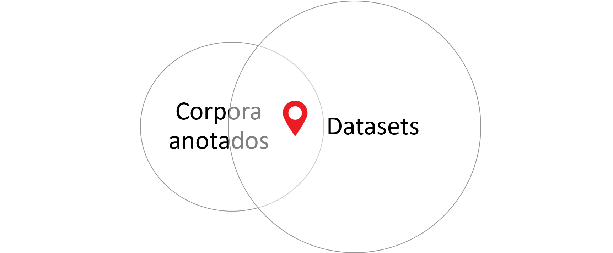
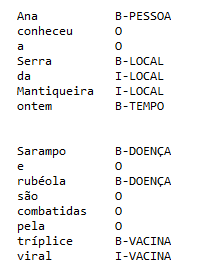
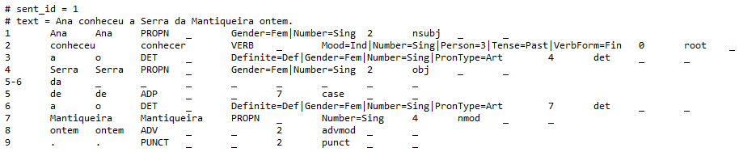
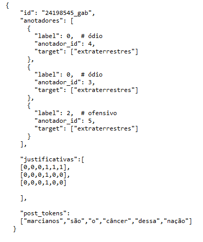
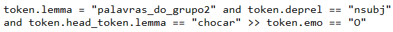
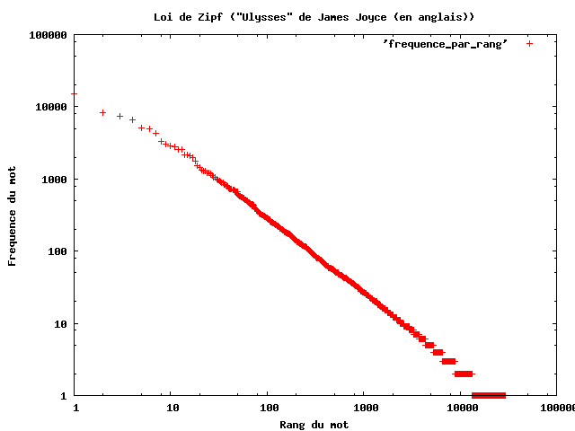
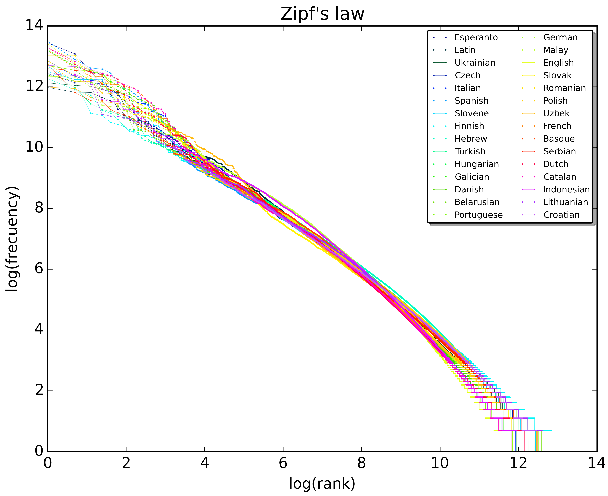

16 Conjunto de dados, dataset e corpus
16.1 Introdução
Dados linguísticos são centrais no PLN, sobretudo nos paradigmas estatístico, neural e híbrido (Seção Os Paradigmas de PLN). A preparação de conjuntos de dados – datasets – de qualidade para o PLN é um empreendimento que costuma envolver conhecimentos variados – de computação e linguística, no mínimo. Neste capítulo, fazemos uma apresentação de conceitos básicos e metodologias relacionados à criação de datasets que contêm algum tipo de intervenção ou curadoria humana nos dados1.
Apesar da relativa popularização das abordagens neurais e dos LLMs Capítulo Modelos de linguagem, que têm como insumo dados brutos/textos crus, sem intervenção humana, a preparação cuidadosa de conjuntos de dados se justifica por, pelo menos, dois fatores: o primeiro é a já reconhecida melhoria no desempenho de modelos quando são ajustados para tarefas ou domínios específicos (o ajuste fino supervisionado); a segunda é a constatação de que os altos custos financeiros envolvidos no treinamento dos grandes modelos de língua tornam abordagens estatísticas tradicionais, computacionalmente menos custosas, alternativas viáveis para a representação de informação linguística no PLN.
Um dataset, literalmente, é um conjunto (set) de dados (data). Dados são elementos que, organizados (ou distribuídos) de uma(s) certa(s) maneira(s), isto é, tratados, produzem informação. Praticamente qualquer coisa pode ser um dado. No PLN, os dados que usamos são dados linguísticos; nossa matéria prima é a linguagem humana, e cada língua individualmente.
Os dados podem ser
- palavras, que podem ser classificadas como substantivos, advérbios, verbos etc;
- postagens em rede social, que podem ser classificadas como ofensivas ou não;
- palavras ou unidades maiores, que podem ser classificadas como pessoa, lugar etc;
- pronomes, que podem ser classificados como masculinos, femininos ou neutros;
- documentos ou frases, que podem ser classificados como simples ou complexos;
- pares de frases, que podem ser classificadas como sinônimas (mais precisamente, classificadas quanto ao seu grau de similaridade) ou não;
- segmentos de textos, que podem ser classificados e relacionados como uma pergunta e a resposta a ela associada;
- sequência de caracteres que aparecem entre espaços em branco ou espaços em branco e pontuação, que podem ser classificados como palavras;
- posição que cada palavra ocupa em uma frase ou em um texto inteiro;
- frequência de cada palavra ao longo de um texto;
- sons, que podem ser classificados como fala humana, uma tosse ou uma risada;
- sons de fala, que podem ser classificados como uma palavra (“agente”) ou mais de uma (“a” “gente”).
Partindo dos exemplos acima, o elemento “palavra” pode virar um dado quando atribuímos a ele algum valor, como a sua classe gramatical (substantivo, verbo etc.), classe semântica (pessoa, lugar etc.), sua posição no texto ou a sua frequência.
No PLN, estes valores podem ser atribuídos aos dados de duas maneiras. A primeira delas é de maneira explícita – por exemplo, com cada palavra associada a uma informação do tipo PoS (classe de palavra, do inglês, part-of-speech), sendo essa informação do tipo substantivo, verbo, pronome, advérbio etc. Ou cada frase (ou palavra) associada a uma informação do tipo polaridade de opinião, sendo essa informação do tipo positiva, negativa, neutra. No primeiro caso podemos dizer que organizamos (ou distribuímos, ou classificamos, ou rotulamos) as palavras do texto conforme sua classe morfossintática, no segundo, podemos dizer que organizamos (ou distribuímos, ou classificamos, ou rotulamos) as frases (ou palavras) do texto conforme sua polaridade. O que há em comum em ambos os casos é a organização (ou classificação) dos dados conforme classes pré-estabelecidas que nos parecem relevantes para explorar o conteúdo linguístico, e a partir delas produzimos informação: por exemplo, se há mais opiniões positivas ou negativas (ou neutras) com relação a um determinado objeto.
Mas nem todo dataset linguístico precisa ter seus dados organizados de acordo com atributos “externos” ao texto. Grandes modelos de língua – modelos de previsão de palavras – têm como entrada imensos volumes de texto, sem informação linguística explícita associada (Capítulo Modelos de linguagem). A informação capturada é a posição da palavra no texto e a frequência com que é usada, e isso já permite saber muito sobre as palavras, desde que tenhamos muitas delas. Mas não é deste tipo de dataset que nos ocuparemos aqui (veja o [sec-cap-modelos-metodos-dados]), e nem dos procedimentos que transformam posição e frequência em informação linguística, tema do Capítulo Representação vetorial e semântica distribucional. Nosso foco está nos dados linguísticos que possuem alguma organização explícita humana, feita conforme classes pré-definidas por nós – dados anotados, que são elementos linguísticos que possuem classificações, anotações ou rótulos linguísticos que codificam alguma dimensão do nosso entendimento sobre as palavras, frases ou textos. Porque contêm classificações (ou análises) atribuídas aos elementos linguísticos, estes conjuntos de dados também podem ser considerados corpora anotados.
16.1.1 Dataset ou corpus anotado?
Um corpus é um conjunto de dados linguísticos. A utilização de corpus – palavra latina que significa corpo e que tem como plural a palavra corpora – vem de longa data nos estudos linguísticos e lexicográficos2, e ganha força nos anos 1980 com a popularização dos computadores. A partir daí, e cada vez mais, corpus diz respeito a uma coleção de textos que pode ser processada por computadores. O material que compõe um corpus (os textos) é coletado com algum propósito (investigar ou explorar algum aspecto da linguagem, teórico ou aplicado) e foi produzido “naturalmente”, isto é, não estamos diante de frases artificialmente inventadas com o objetivo de construir um corpus.
Como inicialmente o uso de corpus estava vinculado aos estudos linguísticos, o propósito mais comum é (ou era) o de estudar a/uma língua. Mas, à medida que a utilização de corpus vai sendo ampliada para áreas além da linguística, como no PLN, os critérios que caracterizam um corpus vão também se ampliando. A naturalidade – enunciados naturalmente construídos em situações reais de trocas linguísticas, aspecto fundamental se o interesse é estudar uma língua – é deixada de lado quando pensamos em corpora criados artificialmente (automaticamente) a partir de dados “naturais”. Este é o caso de materiais criados por meio de tradução automática, ou por meio do aumento artificial de dados, que pode ser feito utilizando (i) regras ou (ii) LLMs e prompts capazes de induzir certas construções linguísticas. Um exemplo do primeiro caso é o WinoBias3 (Zhao et al., 2018), criado para estudar viés de gênero e no qual, por meio de regras, foi criado um material balanceado quanto ao gênero com o mesmo número de entidades (pessoas) do gênero masculino e do gênero feminino. Um exemplo do segundo caso é o ToxSyn-PT, criado para permitir a detecção de discurso de ódio4 (Brito et al., 2025).
Corpus ou dataset? Podemos usar três critérios para diferenciar corpus e dataset: utilidade, tipo de anotação, e tamanho.
Um corpus, para ser considerado um dataset linguístico no PLN, precisa ter algum tamanho. No mínimo, tamanho suficiente para permitir avaliar de maneira confiável o resultado de uma análise automática e, idealmente, tamanho suficiente para treinar um modelo de aprendizado de máquina. Nos estudos linguísticos, conforme o fenômeno pesquisado, quantidade pode não ser uma exigência. Em ambos os casos (nos estudos linguísticos e no PLN), podemos dispor de material já classificado – ou anotado, ou rotulado, ou etiquetado. Esta anotação ou classificação pode ser de diferentes naturezas e pode estar associada a diferentes segmentos de texto (palavras, expressões, frases, parágrafos ou o texto inteiro). Por exemplo:
- Indicar a classe gramatical de uma palavra;
- Indicar se duas frases são sinônimas ou não;
- Indicar se um tweet expressa discurso de ódio;
- Indicar se uma palavra se refere a uma PESSOA;
- Relacionar uma palavra a pronomes e demais outras maneiras pelas quais esta palavra é referida ao longo de um texto;
- Indicar se uma palavra, expressão, ou tweet é favorável ou desfavorável com relação a alguém ou algo;
- Indicar se uma frase é uma boa legenda para uma imagem;
- Indicar, para um trecho de áudio de um enunciado linguístico, a sua transcrição textual;
- Indicar qual sentimento uma palavra ou segmento de texto evoca.
Todos esses rótulos ou anotações têm em comum o fato de codificarem a interpretação humana, assim outro critério relevante para a distinção entre corpus e dataset é o tipo de anotação. Nos estudos linguísticos é possível (e comum) a utilização de corpora que foram anotados de maneira completamente automática, desde que a anotação automática seja de qualidade. Já quando pensamos em datasets para o PLN, como sua utilidade está na avaliação e treinamento (ou ajuste) de ferramentas ou modelos, as anotações são feitas por pessoas, ou feitas por máquinas e revistas por pessoas. Neste caso, datasets são equivalentes a corpora padrão ouro (gold standard).
É possível que a diferença quanto à nomeação – corpus anotado ou dataset – também se deva à utilidade em foco: quando aquilo que a Linguística chama de corpus anotado passa a ser usado como material para treinar modelos de linguagem, ele também pode ser visto como um dataset. Vejamos a apresentação do já referido WinoBias, criado para a verificação de viés de gênero na resolução de correferência (Capítulo Resolução de correferência). Retomaremos o WinoBias mais à frente, mas interessam aqui as duas primeiras frases do resumo do artigo que apresenta o material (grifo meu)5:
Apresentamos um novo benchmark, WinoBias, para resolução de correferência com foco no viés de gênero. Nosso corpus contém sentenças no estilo do esquema de Winograd com entidades correspondentes às pessoas às quais se faz referência por meio de sua profissão .
Já no repositório do projeto onde está o WinoBias, encontramos a seguinte apresentação (grifo meu)6:
Analisamos diferentes sistemas de resolução de anáfora para entender as questões de viés de gênero presentes em tais sistemas. Dando uma mesma frase como entrada para o sistema, mas apenas mudando o gênero do pronome na frase, há variação no desempenho dos sistemas. Para demonstrar a questão do viés de gênero, criamos o dataset WinoBias.
Nem todo dataset tem dados linguísticos, e nem todo conjunto de dados linguístico é um corpus anotado. Nem todo corpus anotado é considerado, no PLN, um dataset linguístico. Neste capítulo, trataremos de datatsets – corpora padrão ouro – que são conjuntos de dados linguísticos classificados conforme orientação humana. (Figura 16.1).

16.1.2 Anotação linguística
A anotação é uma atividade de classificação: temos um conjunto de classes (as etiquetas) – também chamado de tagset – previamente definidas e critérios que guiam a classificação. O que torna a anotação interessante – ou desafiadora – é que a classificação é feita levando em conta o contexto do enunciado linguístico. Nos exemplos do Quadro 16.1, temos anotações de classes de palavras (anotação de PoS) e anotação de polaridade, utilizada na tarefa de análise de sentimentos. A anotação de polaridade, nos exemplos, está presente em dois níveis: no nível da palavra propriamente – cada palavra recebe uma etiqueta indicando se a polaridade é positiva [+], negativa [-] ou neutra [0] – e no nível da frase – cada frase recebe uma etiqueta indicando se a polaridade é positiva, negativa ou neutra com relação ao objeto sendo analisado. A anotação pode ser codificada (ou formalizada) de diferentes maneiras, e a codificação do Quadro 16.1 é apenas ilustrativa. Na Subseção Codificação retomaremos aspectos de codificação e formalização.
Quadro 16.1 Exemplos de frases anotadas com PoS e polaridade de sentimento
Anotação é uma atividade interpretativa. Como em boa parte das vezes o que está sendo anotado é o resultado de um amplo consenso, ou do “senso comum”, ficamos com a impressão (errada) de que estamos diante de uma classificação objetiva. Decidir, por exemplo, se a palavra “TRISTE”, na frase 1, deve ser classificada como substantivo ou adjetivo é uma decisão que irá depender da teoria adotada na anotação. Na frase 2, analisar a palavra “um” como artigo ou numeral também é fruto de uma escolha (teórica), e não a codificação de um dado objetivo. E, embora aqui o aspecto interpretativo da anotação pareça um detalhe teórico que só interessa a linguistas, veremos na Subseção Anotação: sabedoria de especialistas ou sabedoria da multidão? consequências nem um pouco irrelevantes desta crença na objetividade da classificação, que aparece disfarçada de senso comum.
Quanto à importância do contexto, vemos pelos exemplos que ainda que as frases 1 a 3 contenham palavras de polaridade de sentimento considerada negativa (“triste” e “sofri”), no exemplo (1) a frase não tem polaridade (ou tem polaridade neutra), no exemplo (2) é difícil decidir se estamos diante de um julgamento de valor (negativo) sobre o livro ou se diante de uma constatação, por isso a polaridade sugerida é seguida com um “?”, e no exemplo (3) temos uma frase que indica uma opinião positiva sobre um livro, apesar da menção ao sofrimento.
16.2 Datasets pra quê?
A existência de datasets linguísticos, ou corpora padrão ouro, é fundamental para uma série de tarefas e aplicações de PLN. E por que fundamental? São três os motivos, todos igualmente importantes.
O primeiro deles é consequência da popularização, no PLN e na IA, de métodos baseados em aprendizado de máquina (AM): precisamos de exemplos do que se precisa aprender. E mesmo com os avanços da área, bons exemplos7 continuam necessários, com a vantagem de agora os algoritmos necessitarem de uma quantidade menor deles, graças ao ajuste fino (Capítulo Modelos de linguagem). Já se sabe que quanto mais cuidado na preparação dos dados, melhor o desempenho dos modelos – melhor a qualidade das predições8. Neste contexto, um bom dataset, fruto de uma preparação cuidadosa, pode ser visto como um atalho para o aprendizado, como um empurrãozinho que damos nos modelos para que atinjam logo o melhor resultado possível.
Então um motivo para investirmos na criação de datasets linguísticos é fornecer exemplos para que certos tipos de aprendizado possam acontecer de maneira eficiente.
O segundo motivo que torna datasets fundamentais em diversas tarefas de PLN é que eles facilitam o processo de avaliação de um sistema, ferramenta ou modelo, e de comparação entre eles. Isto porque se a anotação codifica, no corpus, a compreensão humana sobre algo, e o que queremos das máquinas em certas tarefas é que elas reproduzam esta compreensão humana, a melhor maneira de saber em que medida um resultado é bom é comparando-o com o entendimento humano. Nesse contexto, poder dispor de um corpus padrão ouro facilita muito as coisas. Sem ele, a alternativa para a avaliação é selecionar uma amostra do material analisado automaticamente e avaliar. Embora esta seja a única opção disponível em certos casos, não é ideal porque dificulta comparações com o desempenho de outros modelos/sistemas/ferramentas. Isto é, se cada ferramenta for avaliada de maneira “independente” a partir de uma amostra do seu resultado, será difícil uma comparação com os resultados de outras ferramentas. Outra desvantagem da avaliação por meio da análise de uma amostra, ainda que mais facilmente contornável, é que quando separamos uma amostra para fazer uma análise de erros, é mais fácil perceber aquilo que foi analisado de maneira errada (falsos positivos) do que aquilo que não foi analisado, mas deveria ter sido (falsos negativos)9. Quando se trata de LLMs, a relação entre avaliação e datasets é diferente. Tarefas de geração de texto, como sumarização, simplificação textual, tradução, respostas a perguntas, não dispõem de um gabarito fechado e, nestes casos, o dataset contém apenas um gabarito de referência, já que a partir de um mesmo texto podemos produzir diferentes resumos, simplificações, traduções, ou respostas, que podem estar corretos mesmo compartilhando poucas palavras a referência. Como textos gerados por modelos neurais apresentam um amplo domínio de sinonímia e paráfrase, uma avaliação baseada apenas na forma das palavras será pouco informativa. Por fim, é preciso ter cuidados adicionais na utilização de datasets para avaliar LLMs devido ao fenômeno da contaminação dos dados (Balloccu et al., 2024): uma vez que o dataset esteja público na internet, é preciso garantir que ele não tenha sido usado no treinamento do modelo, o que levaria a um desempenho artificialmente bom na tarefa avaliada (o capítulo Capítulo Avaliação de Grandes Modelos de Linguagem aborda a avaliação de LLMs).
O último motivo é um desdobramento dos anteriores: a partir do momento em que temos condições de treinar, avaliar e comparar resultados, temos condições de avançar no PLN, uma vez que o avanço na área pode ser medido pelo desempenho em tarefas. Ou seja, no PLN, um dataset é criado para ajudar a resolver algum problema ou tarefa10. Assim, para que o dataset exista, houve uma pergunta/problema/tarefa anterior que motivou a sua existência – alguma dimensão do PLN foi percebida como sensível e foi considerada digna de uma medição: o quanto o PLN é bom em responder perguntas, encontrar palavras de um certo tipo semântico, relacionar palavras que se referem à mesma entidade ao longo de um texto, traduzir, resumir ou simplificar um texto, dentre tantas outras.
E aqui aproximamos datasets e avaliações conjuntas (shared tasks). Uma avaliação conjunta tem como principal objetivo incentivar a pesquisa e desenvolvimento de uma área, uma vez que fornece uma estrutura experimental comum (os mesmos conjuntos de dados e as mesmas medidas de avaliação). Além disso, avaliações conjuntas também são maneiras de divulgar uma tarefa. Se achamos que um determinado aspecto do PLN precisa ser avaliado, ou precisa de atenção, a criação de uma avaliação conjunta que a tematize é um caminho. E, como já sinalizado, avaliações conjuntas só existem se existem datasets associados (e quanto melhor o dataset, mais bem-sucedida a avaliação) (Veja o capítulo Capítulo Avaliação conjunta em português).
Voltando um pouco no tempo para exemplificar, foi a criação de um corpus padrão ouro (chamado “Coleção Dourada”) no âmbito da avaliação conjunta HAREM11, em 2007-2008, que permitiu o avanço na tarefa de identificação e classificação de entidades mencionadas em português. Foi a criação do corpus ASSIN que permitiu a realização da avaliação conjunta ASSIN (Avaliação de Similaridade Semântica e Inferência Textual)12, levando ao avanço em tarefas de similaridade semântica e inferência em português.
No entanto, em ambos os casos estamos diante de tarefas (identificação de entidades mencionadas, de similaridade semântica) que já existiam para outras línguas e que careciam de recursos para que pudessem ser abordadas também em língua portuguesa. Que outras tarefas poderíamos ter? Que desafios ou tarefas o PLN tem e ainda não foram abordados por falta de recursos? Por isso, além de avaliar e treinar, um dataset permite, ainda que indiretamente, pautar os rumos do PLN.
É definindo tarefas que vamos abrindo caminhos no PLN – tanto caminhos previamente explorados para outras línguas, mas ainda não pavimentados para o português, quanto caminhos realmente novos, ainda não explorados em nenhuma língua. Um problema, ou tarefa, é enfrentado quando temos os meios para fazê-lo – e a construção de conjuntos de dados é um dos meios de que precisamos, considerando as abordagens atuais.
16.2.1 Sobre a importância dos dados
Quando indicamos que, para o AM, datasets são relevantes porque fornecem exemplos e permitem criar modelos, nem sempre nos damos conta da importância dos dados de um ponto de vista qualitativo. Isto é, pensamos nos dados como recursos de que precisamos dispor em abundância para produzir bons modelos de linguagem (Capítulo Modelos de linguagem), mas não como fonte de “visões de mundo”. Afinal, se uma língua constrói e representa as visões de mundo e crenças de seus falantes, um modelo de língua (ou de linguagem) irá, mesmo que indiretamente, codificar visões de mundo e crenças subjacentes aos dados linguísticos com que foi treinado. De forma mais direta: se, no paradigma do AM com representações distribuídas, todo o conhecimento vem dos dados, precisamos entender bem que dados são esses.
Um exemplo famoso da importância dos dados vem da pesquisadora Robyn Speer, que criou um algoritmo de Análise de Sentimento baseado em representações distribuídas (Capítulo Representação vetorial e semântica distribucional), usando como dados textos publicados da internet. Ela percebeu que o algoritmo estava classificando restaurantes mexicanos de maneira negativa, o que não encontrava respaldo na pontuação dada pelos usuários para avaliar os restaurantes e nem nos próprios textos das resenhas dos restaurantes. O motivo da avaliação ruim dos restaurantes mexicanos era que a palavra mexicano sempre aparecia associada a ilegal: imigrantes mexicanos estavam associados a imigrantes ilegais, levando à classificação de restaurantes mexicanos como algo negativo. A experiência e suas lições estão relatadas no post “How to make a racist AI without really trying” (“Como fazer uma IA racista sem fazer muito esforço”).
E, apesar das tentativas de mitigar viés indesejado utilizando pessoas comuns para classificar dados (Subseção Anotação: sabedoria de especialistas ou sabedoria da multidão?), ainda há muito por fazer. Um estudo de 2021, por exemplo, mostrou que textos ficcionais criados pelo modelo de linguagem GPT-3 reproduzem estereótipos de gênero: se há um personagem feminino, ele tem muitas chances de estar associado a palavras que remetem a ambiente doméstico/familiar e à aparência/corpo; se o personagem é masculino, há muitas chances de estar associado a palavras que remetem à política, guerra e tecnologia (Lucy; Bamman, 2021). E por que isso? Justamente porque é o padrão (e viés) encontrado nos dados. Em uma exploração da caracterização de personagens literários em obras de língua portuguesa que já estão em domínio público – obras brasileiras e portuguesas –, encontramos um padrão bastante parecido quando analisamos as caracterizações atribuídas preferencialmente a personagens masculinos e personagens femininos: personagens femininos são caracterizados sobretudo quanto à aparência, com destaque para a beleza (ou ausência dela); personagens masculinos caracterizados sobretudo quanto a traços de caráter como excelência, coragem, liberdade e sabedoria (Freitas; Santos, 2023).
Ou seja, os estereótipos produzidos pelo modelo de linguagem nada mais são do que a reprodução dos padrões que já estão nos dados. E os padrões que estão nos dados nada mais são do que comportamentos linguísticos que estão na nossa sociedade. Modelos de IA não são neutros nem isentos de viés, e talvez seja impossível fazer diferente13. Os dados são sempre um registro do que foi dito em algum tempo/espaço, são sempre dados do passado, e por isso, invariavelmente, modelos de previsão estão fadados a refletir o passado. Isso nos leva a uma reflexão: podemos, por meio de um passado alterado, prever um futuro que queremos? Que futuro queremos? Será que datasets construídos artificialmente com o objetivo de eliminar vieses indesejados, ao estilo do WinoBias, que artificialmente (e indiretamente) constroem relações igualitárias de gênero, raça ou etnia, seriam capazes de produzir linguagem e, consequentemente, de criar mundos, mais igualitários? Quais as implicações éticas disso? Em 2025, o presidente estadunidense Donald Trump anunciou a exigência de que LLMs usados pelo governo fossem “ideologicamente neutros”, acusando modelos associados à promoção de diversidade, igualdade e inclusão de serem “IA woke”. “Quem controla o passado, controla o futuro.”, dizia o slogan do estado totalitário do romance 1984, de George Orwell.
16.3 Características de um bom dataset linguístico
Quando falamos de um bom dataset linguístico, ou de um bom corpus anotado, são cinco as características desejáveis: consistência, variedade, representatividade, documentação detalhada e tamanho.
- Consistência – por consistência, entenda-se que fenômenos semelhantes devem ser anotados (isto é, analisados) da mesma maneira. A consistência permite que algoritmos de aprendizado de máquina generalizem a partir dos dados e que as avaliações sejam confiáveis. Em outras palavras: se para aprender são necessários exemplos, mas os exemplos são inconsistentes – às vezes Brasil em construções do tipo morar no Brasil está anotado como LOCAL, às vezes está anotado como ORGANIZAÇÃO –, não será possível uma boa generalização, pois os dados ruidosos trarão dificuldade para esse processo.
- Variedade – na medida do possível, um bom dataset deve ser variado (ou balanceado) com relação aos fenômenos para os quais foi construído. Por exemplo, se desejamos um dataset para a tarefa de análise de sentimento/opinião com resenhas de produtos, um compilado de avaliações de páginas do tipo “Reclame Aqui” não é recomendado, pois conterá, invariavelmente, muito mais avaliações negativas do que positivas. Se desejamos um dataset para reconhecimento de fala (Capítulo Recursos para o processamento de fala), é importante que ele contemple a diversidade dos sotaques brasileiros.
- Representatividade – esperamos que os textos que compõem o corpus/dataset sejam representativos do tipo de texto que será alvo da aplicação, isto é, ao qual o modelo baseado nesse dataset será aplicado. Se a ideia é criar um modelo/ferramenta que irá procurar informações em relatórios técnicos, não é indicado que o modelo seja gerado a partir de um dataset que contém apenas textos jornalísticos, por exemplo. Por outro lado, considerando o que foi dito sobre a presença de viés indesejado nos dados, a representatividade pode ser uma armadilha. Dados representativos poderão conter também estereótipos, então talvez seja mais prudente pensar na representatividade como uma característica que não é absoluta. Podemos desejar um material que seja representativo da “vida real” em vários aspectos, mas talvez não em todos14.
- Documentação – um bom dataset é um dataset bem documentado, que informa a origem do conteúdo textual, as classes de anotação e as diretrizes usadas para anotar, as características e/ou formação dos anotadores. É por meio da documentação, por exemplo, que poderemos saber que o conteúdo de um dataset de análise de sentimento foi extraído do site “Reclame Aqui”, e que talvez seja pouco indicado para aprendizado equilibrado de avaliações positivas e negativas. Como já mencionado, outro ponto cada vez mais importante diz respeito aos cuidados relativos à presença de viés indesejado nos dados. Uma vez que não é possível obter dados sem viés nenhum– línguas não são neutras, e uma língua constrói e dissemina visões de mundo e valores de uma comunidade linguística –, o material com que o PLN trabalha (enunciados reais proferidos por pessoas reais, e anotados ou revisados por pessoas reais) pode acabar incluindo e reproduzindo preconceitos. Com o objetivo de minimizar limitações científicas e éticas decorrentes de conjuntos de dados enviesados, tem sido proposto que se inclua na documentação de datasets informação detalhada a respeito dos falantes que produziram tais dados ou dos anotadores que analisaram e classificaram os dados em termos de gênero, classe social, idade, etnia e o que mais for possível obter (sempre respeitando questões de privacidade). Esta preocupação não é nova (Couillault et al., 2014), mas tem importância crescente no PLN (veja-se, mais recentemente, (Bender; Friedman, 2018)).
- Tamanho – por fim, o tamanho é um aspecto que precisa ser levado em conta. E por tamanho não me refiro apenas ao tamanho do corpus em tokens ou palavras, mas também à quantidade de fenômenos rotulados. Na anotação de PoS e de sintaxe, por exemplo, todas as palavras recebem alguma etiqueta; na anotação de entidades, polaridade ou correferência, por outro lado, apenas algumas palavras são classificadas, isto é, recebem uma etiqueta. Consequentemente, um dataset de anotação morfossintática poderá ser menor, em número de palavras, do que um de correferência ou de entidades. Ou seja, uma coisa é o número de palavras (ou de tokens), e outra o número de palavras (ou tokens) que recebem alguma etiqueta. Uma das características dos LLMs (grandes modelos de linguagem) é terem sido treinados com datasets gigantescos. Para conseguirem produzir material com o volume desejado e em quantidade de tempo razoável, grandes empresas fazem uso da anotação colaborativa (ou anotação crowdsourcing), que cada vez mais é alvo de críticas e preocupações, como veremos na Subseção Anotação: sabedoria de especialistas ou sabedoria da multidão?.
Por fim, como nem sempre teremos à disposição datasets com todas as características desejáveis, sobretudo no que se refere à variedade e tamanho, podem ser utilizadas diferentes técnicas para criar ou aumentar artificialmente o conjunto de dados linguísticos, como aprendizado ativo, no qual amostras de elementos críticos para o aprendizado são selecionadas para a anotação, guiando o aprendizado de pontos sensíveis e diminuindo a necessidade de exemplos e, consequentemente, o custo da anotação manual (Zhang et al., 2022) e (Settles, 2010). Outra possibilidade é a utilização de linguagem artificialmente gerada por LLMs para alimentar modelos. No entanto, esta é uma abordagem delicada, uma vez que a utilização de dados criados por LLMs para o treino e ajuste de outros modelos de IA, de forma recursiva, pode levar ao colapso do modelo (Shumailov et al., 2024). Neste sentido, dados e interações genuinamente humanos são recursos de grande valor. Um bom dataset é aquele que contém enunciados linguísticos proferidos por pessoas.
16.4 Por onde começar?
Para criar um dataset, precisaremos de
- um problema ou tarefa: por exemplo, classificar enunciados como ofensivos ou não; classificar palavras ou grupos de palavras como remetendo a PESSOAS etc.
- etiquetas de anotação (tagset), com as quais iremos classificar os dados;
- instruções sobre como classificar os dados, conhecidas como esquema ou diretrizes (guidelines) de anotação;
- compilação ou criação de um corpus adequado para esta tarefa;
- uma maneira de codificar a anotação;
- pessoas responsáveis pela anotação;
- uma ferramenta de anotação (se for o caso);
- estratégias para otimizar o processo de anotação (se for o caso);
- maneiras de avaliar o resultado da anotação, isto é de avaliar a qualidade do dataset produzido (embora não tenha a ver com “por onde começar?”, avaliar a qualidade do material produzido é parte importante da preparação de datasets).
16.4.1 Definição do problema ou tarefa
O primeiro passo é ter clara a motivação para a criação do dataset – que problema ele se propõe a ajudar a resolver? Assim, é fundamental ter clareza sobre a motivação para a classificação dos dados: ao organizar os livros em uma estante, diferentes motivações (encontrar rapidamente os livros de que preciso ou tirar fotos de uma estante de livros para decoração) selecionam diferentes critérios para classificação (assunto, por um lado, e tamanho do dos livros, por outro), e levam a diferentes resultados – diferentes maneiras de dispor os livros na estante. Do mesmo modo, uma palavra como “Sofri” em “Sofri para terminar o livro” pode ser classificada como “negativa” se a motivação para a classificação é encontrar opiniões, e também pode ser classificada como um “verbo” se a motivação para a classificação é o comportamento morfológico. A sequência “Abri mão” em “Abri mão do prêmio” pode ser classificada como uma unidade se a motivação para a classificação é encontrar unidades de sentido (equivalente a “abdicar”, por exemplo), mas considerada duas unidades se a motivação para a classificação é construir um corretor gramatical, já que será necessário verificar, na correção, se as várias formas do verbo “abrir” estão corretas (“eles abriram mão do prêmio”, “abrirei mão do prêmio”).
16.4.3 Escolha do corpus
A escolha do corpus também está diretamente associada à tarefa – se o interesse está na detecção de opinião, é pouco indicado um corpus da Wikipédia, por exemplo, a não ser que o problema seja justamente a busca por opinião em textos que supostamente não deveriam conter opinião. Além disso, outras preocupações devem estar associadas à seleção do material:
- Tem direitos autorais ou pode ser usado (e disponibilizado) livremente?
- Leva em conta ou viola a privacidade de quem escreve (Capítulo PLN em Redes Sociais)?
- Como lidar com conteúdo duplicado ou repostado, comum na internet?
- Como é a qualidade do texto?
- Produzido originalmente em formato eletrônico ou resultado de processamento por OCR?
- Possui muitas imagens, gráficos, tabelas? Neste caso, como lidar com este material?
- O texto será normalizado (tudo em minúsculas, por exemplo), ou será mantida a grafia original?
Também é possível que o material textual que compõe um corpus tenha sido especificamente produzido para o próprio corpus, como o exemplo do SNLI mostrou17. Outro exemplo de dataset em que o material textual é produzido pelas pessoas com a finalidade de criar o dataset é o SQuAD (Stanford Question Answering Dataset), criado para a tarefa de perguntas e respostas (para a língua inglesa). Na tarefa de criação do corpus, as pessoas receberam parágrafos de documentos da Wikipédia, e sobre este material deveriam formular 5 perguntas sobre o conteúdo, e respondê-las. Além disso, não era possível usar o recurso de copiar & colar, o que forçou as pessoas a usarem suas próprias palavras na formulação das perguntas e das respostas. Nestes casos, a etapa de seleção do corpus deixa de existir, e é substituída pela etapa “Crie uma maneira engenhosa de produzir certos fenômenos linguísticos em grande escala”. Do mesmo modo, não há anotação ou classificação propriamente, uma vez que os enunciados criados já “nascem” organizados conforme certas classes (do tipo pergunta e do tipo resposta, ou do tipo contradição).
16.4.4 Codificação
Na preparação de um dataset é preciso decidir o formato dos dados (txt, csv, tsv, JSON, XML ou outros formatos) e o formato da anotação propriamente. Muitas vezes, o formato é determinado pela ferramenta que se usa para anotar; outras vezes, a ferramenta é escolhida em função (também) dos arquivos que suporta.
Por exemplo, um formato de anotação bastante comum (para a anotação de entidades mencionadas, mas não só) é o formato IOB (Inside-Outside-Beginning), ou BIO, em que o B significa o início (begin) de uma entidade, o I (in) a continuação dela, e o O (out), indica que a palavra em questão não pertence à entidade. Por exemplo, em “Ana conheceu a Serra da Mantiqueira ontem”, ou em “Sarampo e rubéola são combatidas pela tríplice viral” teríamos o seguinte, usando um token por linha:

Já a anotação de dependências sintáticas, quando feita pela abordagem Universal Dependencies (Capítulo Sequência de caracteres e palavras), segue o formato CoNLL-U, que por sua vez é um formato TSV (tab-separated values, isto é, valores separados por tabulação). São características deste formato:
- Cada frase tem um identificador;
- Na linha seguinte temos o texto da frase;
- Na linha seguinte começa a representação das palavras (tokens) da frase, com um token por linha;
- A separação entre uma frase e outra é feita por uma linha em branco;
- Cada token contém anotação em 10 campos separados por uma tabulação. Cada campo codifica diferentes informações morfossintáticas, e informações não preenchidas são marcadas com o caractere especial “_”.
A Figura 16.3 mostra uma frase no formato CoNLLL-U18.

Também é preciso decidir qual segmento de texto será anotado. Na preparação de datasets para detecção de desinformação e discurso de ódio, ou para análise de sentimento, por exemplo, é possível tanto uma anotação localizada, que classifica palavras e expressões ou, por outro lado, uma anotação que classifica segmentos maiores como frases ou documentos inteiros. Na Figura 16.4, temos um exemplo adaptado do dataset HateXplain19, utilizado na tarefa de detecção de discurso de ódio (e que foi utilizado para avaliar a capacidade do modelo de linguagem GPT de identificar este tipo de discurso). A apresentação do material explica que cada postagem no dataset é anotada de três perspectivas diferentes: (i) a classificação em 3 classes “frequentemente usadas para este tipo de anotação” (“ódio”, “ofensivo” ou “normal”), (ii) a comunidade-alvo (ou seja, a comunidade que foi vítima de discurso de ódio/discurso ofensivo na postagem) e (iii) as justificativas para a classificação, ou seja, as partes do texto que justificam a decisão de anotar algo como odioso, ofensivo ou normal. A Figura 16.4 traz um exemplo (traduzido e adaptado) do material, que está no formato JSON. Cada campo codifica o seguinte:
- Id: identificador único de cada postagem
- Anotadores: traz as anotações produzidas por cada anotador
- Label: indica a etiqueta (ou classe) atribuída a cada postagem. Os valores possíveis ódio (0), normal (1) ou ofensivo (2)
- [anotador_id]: o identificador exclusivo atribuído a cada anotador
- [target]: O alvo da postagem (no caso, adaptamos para os “extraterrestres”, dentre os quais estão os marcianos)
- justificativas: os elementos do texto (os tokens) selecionados como justificativa para a etiqueta atribuída pelos anotadores. Cada justificativa representa uma lista com valores 0 ou 1. Um valor de 1 significa que o token faz parte da justificativa selecionada pelo anotador. Para obter o token específico, podemos usar a mesma posição de índice em “post_tokens”
- post_tokens : A lista de tokens representando a postagem que foi anotada.

Como podemos ver pela Figura 16.4, diferentes porções do texto (diferentes tokens) foram selecionadas como justificativas para a classificação geral (ódio, ofensivo ou normal). Além disso, a mesma postagem foi considerada “discurso de ódio” para duas pessoas (anotadores 4 e 3), mas apenas “discurso ofensivo” para uma delas. E com isso passamos a uma dimensão fundamental da anotação: as pessoas que anotam.
16.4.5 Anotação: sabedoria de especialistas ou sabedoria da multidão?
A anotação é valiosa porque codifica o entendimento humano sobre alguma coisa, mas esta maneira de apresentar a anotação dá a entender que o “entendimento humano” sobre mundo é homogêneo, o que sabemos não ser verdade (e a divergência das interpretações sobre a classificação da frase dos marcianos é um pequeno exemplo). Além disso, nem todas as pessoas têm o conhecimento necessário para fazer todos os tipos de anotação.
Quando mencionamos anotadores especialistas, a referida especialidade pode ser de diferentes naturezas: conhecimento dos conceitos linguísticos (por exemplo, de classes de palavras, anáfora, acarretamento) e/ou do domínio (por exemplo, medicina em um corpus de Medicina) e/ou da tarefa em questão (anotar certos elementos usando certas ferramentas e seguindo certas instruções de anotação).
Inicialmente, boa parte das anotações utilizadas no PLN tinha como fonte ou inspiração os níveis de análise linguística ou alguma teoria linguística: morfologia, sintaxe, semântica, pragmática, papéis semânticos. E, por demandarem este tipo de conhecimento especializado, linguistas sempre foram responsáveis pela anotação. Mas isto não quer dizer que linguistas estão aptos a fazer todo e qualquer tipo de anotação, justamente porque anotações (ou boa parte delas) precisam ser feitas por especialistas, e linguistas são especialistas em linguagem. Há anotações que, idealmente, precisarão do apoio ou supervisão de outros profissionais, como em projetos de anotação e/ou de criação de datasets de áreas como medicina, direito, genética, geologia, dentre tantas outras.
Ao lado de tarefas que demandam conhecimento especializado, há tarefas que demandam “apenas” capacidade de leitura e fluência de escrita, como atribuição de orientação semântica (positiva ou negativa) a enunciados, identificação de entidades genéricas como PESSOA, ORGANIZAÇÃO, ou a criação de frases de determinados tipos, como no corpus SNLI, apresentado na Subseção Conjunto de etiquetas e instruções: o esquema de anotação. E tarefas de PLN que no fim dos anos 2000 seriam vistas com descrédito por serem complexas e precisarem de uma quantidade brutal de dados são realidade 20 anos depois. A criação dos já referidos datasets SNLI e SQuaD são exemplos dessa tendência, apoiada por grandes empresas que pagam (mal) para que pessoas do mundo todo produzam dados de treino para as máquinas. Trata-se da anotação colaborativa, ou anotação feita por “trabalhadores de multidão” ou “microtrabalhadores” (crowdworkers). Anotações colaborativas envolvem um grande número de anotadores e possibilitam produzir datasets enormes em uma quantidade de tempo relativamente baixa.
Apesar de possibilitar a geração de dados em larga escala, esta forma de anotar é alvo de muitas críticas, que vão desde a falta de comprometimento dos anotadores com a tarefa, remuneração baixa e exposição de quem trabalha a material com conteúdo repulsivo (por exemplo, classificar postagens em tarefa de detecção de discurso de ódio) (veja também Capítulo Questões éticas em IA e PLN) até a crítica de que o que se chama de inteligência artificial é o fruto de milhares de trabalhadores invisíveis e precarizados20.
A falta de comprometimento com a tarefa pode levar a características indesejadas nos datasets, que por sua vez irão impactar tanto o que é aprendido quanto a avaliação da tarefa. O estudo de Gururangan et al. (2018), por exemplo, mostrou que os anotadores do corpus SNLI usaram estratégias bastante previsíveis, como o emprego de (i) advérbios de negação para criar frases com contradição, ou de (ii) hiperônimos (relação entre animal e gato, por exemplo) para frases com acarretamento (as instruções para a tarefa estão no Quadro 16.2, na Subseção Conjunto de etiquetas e instruções: o esquema de anotação). Em consequência disso, a previsibilidade tornou a tarefa artificialmente fácil para as máquinas, levando a números de desempenho enganosamente altos.
A Amazon Mechanical Turk (AMT)21 é a mais antiga plataforma para este tipo de anotação, e ficou mais conhecida pelo público pelas reportagens sobre quem são e as condições desumanas a que estão submetidos os “anotadores”, chamados turkeys. Admitindo que muito do que tem sido gerado pelas IAs tem como fonte os dados produzidos por estas pessoas, não chega a ser um grande exagero pensar que elas são as representantes do nosso senso comum.
Assim, outra crítica a este tipo de trabalho é que, se na imensa maioria das vezes o trabalho envolve anotações que codificam um certo senso comum, não sabemos exatamente de quem é este senso comum. A decisão sobre classificar um determinado enunciado como discurso de “ódio”, “ofensivo” ou “normal” (tarefa codificada no dataset HateXplain e em muitos outros do mesmo tipo), por exemplo, é feita com base em alguns exemplos fornecidos pela empresa responsável pela anotação. Mas será que, em temas como esses, o que desejamos é a codificação do “senso comum”? Como garantir que a anotação não vai justamente reforçar e amplificar, uma vez que provavelmente irá alimentar modelos de linguagem, o comportamento que deveria detectar e suprimir? Vejamos a apresentação do HateXplain, traduzida abaixo:
Antes de iniciar a anotação, os anotadores são explicitamente avisados de que a tarefa exibe algum conteúdo de ódio ou ofensivo. Preparamos instruções que explicam claramente o objetivo da tarefa de anotação, como anotar os segmentos de texto e também incluímos uma definição para cada categoria. Fornecemos vários exemplos com classificação, comunidade-alvo e segmentação das anotações para ajudar os anotadores a entender a tarefa.
A apresentação faz parecer que a identificação de algo como “discurso de ódio” (em oposição a “discurso ofensivo”, ou “normal”) é trivial. A manifestação de discurso de ódio, no Brasil, é crime previsto por lei22, mas os limites entre discurso de ódio e liberdade de expressão são alvo de discussão inclusive no meio jurídico. É razoável confiar no senso comum, ou na sabedoria da multidão, para indicar às máquinas aquilo que especialistas estão debatendo?
E voltamos à relevância da participação de especialistas nos processos de anotação. Se queremos codificar conhecimento, precisamos qualificar este conhecimento. Se estamos tentando fazer as máquinas nos ajudarem a classificar um determinado conteúdo, e esta classificação tem implicações jurídicas e limites pouco definidos, é importante que especialistas (do direito e dos direitos humanos, por exemplo) tomem parte no processo. E, neste caso específico, é uma maneira de restringir apenas a especialistas o contato com conteúdo sensível. Sem contar o óbvio: quanto melhor a curadoria, isto é, quanto melhor a classificação dos dados, melhor a qualidade das previsões que serão feitas e menos dados são necessários para um bom desempenho.
Por fim, quando menciono especialistas não-linguistas não quero dizer que o conhecimento linguístico formalizado só é útil em projetos de anotação linguística explícita, isto é, em projetos que envolvem conhecimento de teorias linguísticas. Diferentes tipos de anotação podem se beneficiar se o material já contém alguma anotação linguística anterior, e o ideal é que profissionais de diferentes especialidades colaborem. A anotação linguística, mesmo a mais simples como PoS, já é uma primeira organização dos dados textuais brutos, já codifica informação. O que difere a anotação linguística – de PoS, sintaxe, semântica etc. – das demais é que, por serem genéricas e fornecerem um primeiro nível de organização nos dados, facilitam e impulsionam outros tipos de anotação, como veremos na Seção Procedimentos e estratégias de anotação e revisão.
16.4.6 Ferramentas de anotação
É importante contar com ferramentas que auxiliem o processo de anotação e revisão. Devido à expansão da atividade de anotação para além de tarefas estritamente linguísticas, há um grande número de ferramentas, algumas gratuitas, criadas para este fim. Em geral, a escolha da ferramenta é influenciada pela natureza da anotação ou da tarefa, e pontos para se levar em conta são:
- o formato dos arquivos de entrada e de saída;
- se a ferramenta suporta receber textos com outros tipos de anotação, ou apenas o texto cru que será anotado;
- se é possível corrigir (ou editar) anotações usando regras/padrões linguísticos, ou a revisão/edição só pode ser feita caso a caso;
- se há diferentes maneiras de visualizar os textos que serão anotados;
- se há opção de atalhos usando teclado (precisar clicar para anotar, apesar de aparentemente mais fácil, é pouco produtivo para a maioria das pessoas que anotam);
- se é possível trabalhar online ou apenas localmente;
- se a ferramenta suporta diferentes anotadores trabalhando simultaneamente;
- se a ferramenta é customizável;
- o tempo de familiarização necessário para começar a usar.
Em geral, teremos sempre uma tensão entre uma ferramenta com várias funcionalidades, mas cuja utilização é mais difícil, e uma ferramenta mais fácil de usar, mas que oferece menos funcionalidades. Alguns exemplos de ferramentas são
- BRAT23: para anotação de entidades mencionadas, correferência, dependências sintáticas, entre outras.
- Label Studio24: para anotação de entidades mencionadas, perguntas e respostas, análise de sentimento, entre outras.
- Inception25: para diversos tipos de anotação semântica e discursiva.
- WebAnno26: para anotação morfológica, sintática e semântica.
- Arborator27: para anotar e buscar dependências sintáticas em formato UD.
- ET: dois ambientes integrados para buscar, revisar e avaliar dependências sintáticas em formato UD: Interrogatório28, para buscar e revisar anotações e Julgamento29, para avaliar .
16.4.7 Estratégias de anotação
Um dataset/corpus padrão ouro pode ser construído (i) de maneira totalmente manual por uma única pessoa, por grupo pequeno ou por centenas ou milhares de pessoas, ou (ii) de maneira híbrida, quando é feita uma primeira rodada de anotação automática que depois é revista por pessoas30. Este será o tema da Seção Procedimentos e estratégias de anotação e revisão.
16.4.8 Formas de avaliação
Quem garante que um determinado dataset é bom, isto é, que os dados que contém são confiáveis, diversificados, representativos, codificados de maneira consistente e adequados à tarefa? Cada tarefa tem suas especificidades, e é avaliada de uma maneira. Este será o tema da Seção Como avaliar a qualidade do dataset?.
16.5 Procedimentos e estratégias de anotação e revisão
Depois de definido o problema ou a tarefa, escolhido o corpus, o esquema de anotação, a codificação, a ferramenta e as pessoas responsáveis pela anotação – e nada impede que a anotação seja feita por uma única pessoa, ainda que esta não seja a situação ideal – é hora de anotar propriamente.
Como vimos, diferentes práticas podem ser consideradas anotação:
- Ler (ou ouvir) um enunciado e atribuir uma etiqueta ao enunciado todo ou a partes dele;
- Produzir uma frase (enunciados em geral) a partir de determinadas instruções;
- Produzir perguntas e respostas a partir de um texto.
O foco desta seção está nas anotações do primeiro tipo, e em enunciados escritos. Quando a anotação consiste em atribuir uma etiqueta a um elemento do texto, é possível começar usando uma lista de palavras vindas de um léxico ou recursos lexicais (Capítulo Sequência de caracteres e palavras e (Freitas, 2022)). A língua portuguesa dispõe de alguns, para diferentes tarefas31.
16.5.1 Palavras, regras e padrões linguísticos na construção de um corpus padrão ouro
Quando a anotação parte de uma lista de palavras (um léxico), a cada vez que uma palavra de interesse é encontrada, ela recebe uma etiqueta (ou mais de uma, caso o esquema de anotação preveja isso).
Por exemplo, o Emocionário32 contém uma lista de palavras que, em algum contexto, descrevem algum tipo de emoção e/ou sentimento da língua portuguesa33. O léxico tem o formato de uma lista de lemas associados a uma classe de emoção/sentimento.
Mas, como as palavras podem assumir sentidos diferentes conforme o contexto em que estão sendo usadas, listas de palavras, sozinhas, são insuficientes. Será necessária uma revisão da classificação inicial das palavras (da anotação) para corrigir os erros. Léxicos são sempre ótimos pontos de partida, mas não são eficientes para uma boa anotação. Por exemplo, quando usamos o léxico do Emocionário para anotar um texto, o verbo chocar é anotado com a emoção SURPRESA nas duas frases abaixo, mas apenas a ocorrência 2 remete à SURPRESA, e deveria ter sido anotada.
- Após a queda, sua moto chocou-se com o muro e pegou fogo.
- O mundo chocou-se com a notícia da morte do navegador.
Por isso, após a aplicação do léxico, ficamos diante da necessidade de revisão. Tanto a revisão quanto a anotação podem se beneficiar se o corpus já contiver uma análise linguística prévia: quanto mais informação (anotação) disponível no corpus, mais otimizada pode ser a revisão. Para a língua portuguesa, podemos contar com modelos de anotação morfossintática com desempenho bastante satisfatório, e esta anotação prévia pode ajudar o trabalho de revisão semântica se estamos diante de anotadores humanos especializados em conhecimentos linguísticos/morfossintáticos. Voltando aos exemplos 1 e 2, contar com uma anotação prévia e com uma ferramenta adequada permite listar os sujeitos do verbo “chocar”, facilitando a análise dos casos corretos e dos que precisam ser corrigidos. Ou seja, ao ler uma lista com palavras como “mundo”, “moto”, “caminhão”, “país”, “padre”, avião”, “asteróide” e “Maria” e já sabendo que estas são palavras que estão sendo usadas como sujeito do verbo “chocar” (“mundo se chocou”, “moto se chocou”, “país se chocou” etc), podemos dividir as palavras em três grupos, como no Quadro 16.3.
Quadro 16.3 Distribuição de palavras que exercem a função de sujeito do verbo “chocar”
Das 7 ocorrências listadas, precisaremos ler o contexto apenas daquelas listadas no grupo 3, já que pessoas podem ficar surpresas (grupo1) mas também podem colidir com outras pessoas ou objetos (grupo 2). Após a análise do contexto e decisão sobre os casos de dúvida, precisaremos eliminar a etiqueta SURPRESA quando os sujeitos forem aqueles listados nas palavras do Grupo 2. Com uma ferramenta adequada, podemos fazer todas essas alterações de uma única vez. Será preciso escrever uma regra, verificar se ela faz o que era esperado, e aplicá-la ao corpus. A regra poderia ser algo do tipo:

que utiliza informação morfossintática (codificada nos atributos lemma e deprel, que indica a função sintática). Ou seja, a regra diz34:
Se
O lema do token é alguma das palavras do grupo 2 (informação do atributo lemma) E
A função sintática do token é sujeito (informação do atributo deprel, e nsubj é o código para a função de sujeito) E
O “pai” do sujeito é o lema “chocar” (informação do atributo token.head_token.lemma)
Então
A anotação de emoção do token será zerada (informação do atributo emo)
E por que não usar esta forma de trabalhar, baseada em regras, para todo o PLN? Isto é, se o interesse está na anotação de emoção, por que precisamos de um dataset para treinar e criar um modelo, por que não podemos fazer tudo por meio de regras? Acontece que esta forma de trabalhar é bem pouco prática/eficaz para textos diferentes daqueles que originaram as regras de revisão, e também para corpora realmente grandes. Para o “mundo controlado”35 do dataset, abordagens baseadas em léxicos e regras são uma boa estratégia, mas nem tudo poderá ser (bem) resolvido por regras, e isto se deve a uma propriedade das línguas: independentemente do tipo de texto e do assunto tratado, sempre haverá um número imenso de fenômenos que não se repetem, e para os quais não teremos regras36.
Quando observamos a distribuição das palavras em um corpus, sempre veremos muitas palavras com baixa ocorrência – muitas palavras que ocorrem 5 vezes, ainda mais palavras que ocorrem 4 vezes, ainda mais palavras que ocorrem 3 vezes, ainda mais palavras com ocorrência 2, e ainda mais palavras com apenas uma única ocorrência. Temos uma imensa proporção de palavras do corpus que são ocorrências singulares, de casos que ocorrem apenas uma vez. Este fenômeno tem um nome: hapax legomenon (hapax legomena, no plural), termo que vem do grego e que significa “sendo dito uma vez”.
Esta distribuição segue um padrão: poucos casos com muitas ocorrências, um número intermediário de casos com frequência média, e um número enorme de casos de frequência baixa. Além disso, quanto menor a frequência, mais palavras compartilham essa mesma frequência. Por isso há mais palavras de frequência 1 do que palavras de frequência 2, mais palavras de frequência 2 do que palavras de frequência 3 etc. Em corpora grandes, 40% a 60% das palavras são hapax legomena e outros 10% a 15% são dis legomena (ocorrem 2 vezes). E esta distribuição não se aplica apenas a palavras isoladas, mas a qualquer fenômeno, como a distribuição das entidades em um corpus, ou a estrutura dos sintagmas nominais. Este tipo de fenômeno é capturado pela lei de Zipf, uma lei empírica formulada no contexto da Linguística, e assim nomeada devido ao trabalho do linguista George Kingsley Zipf (1902–1950).
A Figura 16.5 mostra a distribuição das palavras do livro Ulisses, de James Joyce, e vemos que a frequência de uma palavra é inversamente proporcional à sua posição no ranking de frequências (isto é, a palavra na posição 1 tem frequência muito maior que a palavra na posição 10 mil). E vemos que o padrão se repete na Figura 16.6, que mostra a distribuição das 10 milhões de palavras mais frequentes em 30 wikipédias, isto é, em 30 línguas diferentes.

Fonte: Wikipédia

Fonte: Wikipédia
Quando ficamos cientes desta propriedade distribucional, conseguimos entender melhor por que as regras linguísticas são importantes, mas até um certo ponto: as regras capturam regularidades, e regularidades só existem se existe repetição. Por outro lado, se descartamos os casos com frequência 2 ou 1 (que não se repetem, portanto), estaremos olhando para uma língua mutilada, da qual uma imensa parte foi dispensada. Como uma boa parcela da língua não se repete, é difícil, apenas com regras, conseguir generalizar fenômenos. Assim, não importa a quantidade colossal de dados que tenhamos à disposição, sempre teremos uma proporção enorme de casos raros e não previstos. Por isso, abordagens baseadas em regras serão limitadas, e por isso também o aprendizado de máquina apresenta bons resultados: desde que haja dados, algoritmos estão cada vez melhores em prever eventos raros. Apesar da ressalva, o combinado léxico & regras continua sendo uma ótima maneira de construir datasets e corpora padrão ouro, considerando a alternativa de ler cada frase isoladamente, e anotar cada fenômeno de uma vez. A anotação de entidades no DANTEStocks (Piai, 2025), de papéis semânticos no Portinari-Base PropBank (Freitas; Pardo, 2025) e de entidades de geologia e petróleo no PetroNER (Freitas et al., 2023) seguiu esta maneira de trabalhar, que tem a vantagem de não precisar de uma equipe grande de pessoas anotando.
16.5.2 Revisão de anotação
A revisão de uma anotação pode ser motivada pelo reconhecimento de que aquilo que se considerava padrão ouro, no fim das contas, não era tão ouro assim, ou porque estamos diante de um corpus novo, de um gênero ou domínio novos, o que acaba trazendo novos desafios para a anotação ou, como vimos na seção anterior, ou como parte de uma estratégia de anotação.
O que estas situações têm em comum é já contarem com uma anotação, ainda que de má qualidade. Por isso, o que precisamos neste momento é de estratégias para encontrar erros ou inconsistências na anotação. Um caminho óbvio é ler cada frase no corpus, e esse pode ser o primeiro passo se este é o primeiro contato com o corpus e conforme o tipo de anotação. Mas, como única abordagem para a detecção de erros, é uma estratégia limitada, por dois motivos: (i) uma mesma frase pode conter erros de diferentes naturezas, o que tem como consequência dificuldade em manter o foco e a consistência da revisão, deixando o processo de revisão mais suscetível a erros e mais demorado; (ii) conforme o tipo de anotação que está em jogo, há fenômenos que não costumam trazer erros – o reconhecimento de certas formas como artigos, verbos, advérbios, sujeitos, por exemplo – e rever cada unidade da frase envolve rever também estes casos mais fáceis. Ou seja, analisar token a token (ou palavra por palavra) também pode ser um desperdício de energia, em certos casos. Wallis (2003), por exemplo, recomenda trocar uma revisão linear, token a token, por uma revisão transversal, que permitiria ver os fenômenos em questão de forma ampliada e garantiria uma revisão consistente, como ilustramos na seção anterior com o exemplo de chocar e SURPRESA. Por isso – porque analisar linearmente, frase a frase, é pouco eficaz – uma etapa importante do processo de revisão consiste em encontrar uma maneira de detectar erros e corrigi-los.
O trabalho de revisão de anotação pode se tornar um imenso labirinto, e para chegar até o (padrão) ouro precisaremos de um mapa e de um guia que nos ajudem a encontrar os erros ou inconsistências: um caminho que seja, de preferência, rápido e seguro, isto é, que nos permita encontrar erros no menor tempo possível sem abrir mão da qualidade. A preocupação é dupla: do ponto de vista do resultado, buscamos análises consistentes e adequadas – uma anotação padrão ouro –; do ponto de vista do processo de revisão, buscamos eficiência – chegar aos melhores resultados consumindo pouca energia, isto é, em pouco tempo. O estudo de (Freitas; Souza, 2024) avalia diferentes abordagens para a revisão de corpus, e mostra que utilizar divergências entre anotações automáticas como ponto de partida para a revisão (assumindo que as divergências são casos suspeitos) economiza tempo e garante uma revisão de alto nível.
16.5.3 Até onde precisamos rever?
Quem já trabalhou com revisão de corpus sabe que o trabalho parece não ter fim – e por isso também é importante termos estratégias para conduzir e finalizar a anotação.
Do ponto de vista do aprendizado de máquina, a presença de alguns erros aleatórios não chega a prejudicar justamente porque não há o que ser aprendido, já que não será possível generalizar a partir de erros aleatórios. Mas o fato de um dataset ruidoso não influenciar a generalização não significa, necessariamente, que não seja necessário torná-lo o melhor possível. Em primeiro lugar, porque nem todas as ferramentas ou tarefas precisam estar associadas ao paradigma de aprendizado automático. Em segundo lugar, e mais importante, porque se quisermos que o dataset produzido também sirva para avaliação, a presença de erros será sempre um problema, uma vez que pode penalizar sistemas injustamente caso a análise automática esteja correta, mas a anotação padrão ouro esteja errada.
De todo modo, no ambiente de aprendizado automático, temos visto que é possível aprender com dados um pouco ruidosos, e que uma anotação de alta qualidade não se reflete, necessariamente, em facilidade de generalização.
O trabalho de Souza; Freitas (2023) traz alguns dados para informar a discussão no que se refere à língua portuguesa. Na preparação do treebank PetroGold v337, cada rodada de revisões foi acompanhada de uma rodada de “avaliação de aprendizagem” (uma avaliação intrínseca, como veremos na Seção Como avaliar a qualidade do dataset?) com o objetivo de verificar o impacto das melhorias linguísticas na aprendizagem automática. Os resultados estão na Tabela 16.138:
| Tokens revistos | F1 | |
|---|---|---|
| V1 | – | 88,53 |
| V2 | 8.802 | 88,82 |
| V3 | 9.314 | 90,22 |
Pela Tabela 16.1, vemos que apesar do esforço de revisão, o impacto na aprendizagem é limitado, sobretudo entre as versões 2 e 3. No fim das contas, um corpus maravilhosamente anotado leva a um desempenho muito semelhante àquele treinado em um corpus “apenas” bem anotado. No entanto, levar um melhor desempenho não é garantia absoluta de um dataset melhor, como veremos na próxima seção.
16.6 Como avaliar a qualidade do dataset?
Na Seção Datasets pra quê?, vimos o que são e qual a relevância das avaliações conjuntas, que avaliam modelos e ferramentas a partir de um mesmo conjunto de dados/dataset. Nesta seção, o foco está em avaliar a qualidade dos datasets, já que um dataset de baixa qualidade não será capaz de dar suporte a uma avaliação confiável, seja ou não uma avaliação conjunta, e irá gerar um modelo de linguagem (ou previsões) de baixa qualidade39.
Cada tarefa de PLN tem seus próprios métodos de avaliação. No entanto, quando tratamos de datasets anotados, alguns elementos da avaliação são comuns às diferentes tarefas. Uma vez que a anotação pode ser considerada uma tarefa de classificação, a avaliação também é feita nesses moldes.
Para avaliar um modelo ou ferramenta de classificação é comum utilizar as medidas de precisão e abrangência. A precisão mede (avalia) se a classificação que foi feita está correta (se a palavra analisada como verbo é realmente um verbo, ou se um comentário classificado como ofensivo é realmente ofensivo). A abrangência mede (avalia) se tudo o que deveria ter sido encontrado (e classificado) foi encontrado e classificado corretamente (se todos os verbos ou comentários ofensivos foram encontrados). A precisão mede a qualidade das classificações realizadas; a abrangência mede a qualidade da quantidade de elementos classificados, isto é, indica se tudo aquilo que deveria ter sido encontrado foi, de fato, encontrado.
Para calcular precisão, abrangência e a medida F (que é uma média harmônica entre ambas), classificamos os resultados da seguinte maneira:
- verdadeiro positivo (VP): o elemento foi detectado pela análise automática e foi classificado de forma correta.
- verdadeiro negativo (VN): o elemento foi detectado pela análise automática, mas foi classificado de forma errada.
- falso positivo (FP): o elemento foi detectado pela análise automática, mas não deveria.
- falso negativo (FN): o elemento não foi detectado pela análise automática, mas deveria.
Para calcular a precisão fazemos:
\[Precis\tilde{a}o = \dfrac{VP}{VP + FP}\]
Para calcular a abrangência fazemos:
\[Abrang\hat{e}ncia = \dfrac{VP}{VP + FN}\]
Para calcular a medida F fazemos
\[F = 2 * \dfrac{Precis\tilde{a}o * Abrang\hat{e}ncia}{Precis\tilde{a}o + Abrang\hat{e}ncia}\]
Uma ferramenta pode ser muito precisa – todas as classificações que ela faz são corretas – e pode, igualmente, ter uma baixa abrangência – apesar de acertar bastante, há muitos casos que ficam de fora. Em geral, há uma tensão entre essas duas medidas: se afrouxamos a abrangência para encontrar mais casos, podemos diminuir a precisão, trazendo muitos casos errados. E, tentando melhorar a precisão, corremos o risco de perder em abrangência. Por isso, um bom desempenho se reflete em um equilíbrio entre essas medidas, e esta é a proposta da medida F: indicar em um único número uma combinação entre precisão e abrangência que reflita o desempenho geral.
Usamos medidas de F1, precisão e abrangência para avaliar modelos e ferramentas quanto à capacidade de generalizar a partir dos dados a que foram expostos no treinamento. Mas o quanto os dados permitem essa generalização? A capacidade de generalizar a partir dos dados está associada aos algoritmos utilizados, mas datasets também têm um papel nessa história – para o bem e para o mal –, pois algoritmos não fazem mágica.
16.6.1 Concordância entre-anotadores
No que se refere a datasets com dados anotados, além de bem documentado, de tamanho suficiente, variado e adequado à tarefa, um bom dataset é aquele no qual as anotações foram feitas de maneira consistente.
Nos datasets criados por meio de anotação crowdsourcing, algumas estratégias usadas para garantir a consistência são a revisão das análises por outros anotadores (e apenas aquelas anotações em que não foi necessária correção são consideradas) e o descarte de respostas ou análises desviantes (estratégia que vem sendo cada vez mais criticada, como veremos na (Subseção Quando a discordância não é erro: divergências legítimas)).
Na anotação feita por equipes menores, em geral compostas por especialistas, a consistência de uma anotação é avaliada por meio da concordância entre anotadores (ou concordância inter-anotadores), que nada mais é do que a comparação entre duas ou mais anotações (análises) humanas. Quanto maior o índice de concordância, isto é, quanto mais convergência entre as análises, mais confiáveis elas são. Na concordância entre anotadores, a ideia de uma anotação correta é substituída pela ideia de uma anotação consistente (todos os anotadores analisaram os fenômenos da mesma maneira). O raciocínio subjacente é este: se diferentes pessoas, seguindo as mesmas instruções (esquema e documentação de anotação), analisaram um fenômeno da mesma maneira, esta análise é confiável.
Levando em conta o trabalho envolvido na anotação, é comum que a verificação da concordância seja feita utilizando apenas uma amostra do corpus, isto é, temos as mesmas pessoas anotando os mesmos textos apenas em um subconjunto do corpus. O resultado da comparação destas anotações é um número que nos diz o grau de confiança que podemos ter nas análises/anotações; que nos diz o quanto as análises/anotações convergiram (ou divergiram), e a partir dele temos uma estimativa de o quão consistente está a anotação no corpus todo. Uma alta concordância entre anotadores é indicativa do potencial de reprodutibilidade, isto é, da possibilidade de reprodução das análises por outras pessoas (e espera-se que as máquinas sejam capazes de reproduzir estas mesmas análises).
Quando os resultados da concordância entre anotadores indicam uma baixa consistência entre as análises, é possível explorar algumas alternativas:
- Melhoria das instruções de anotação, como a inclusão de exemplos, tanto positivos (“faça assim nesses casos”) quanto negativos (“não faça assim nesses casos”);
- Aumento do tempo de familiarização com a tarefa e com o fenômeno sendo analisado, para que as pessoas responsáveis pela anotação estejam seguras do que estão fazendo;
- Reformulação das classes de anotação (do tagset). Os resultados da concordância entre anotadores podem ser baixos porque o conjunto de classes não está bem desenhado/modelado, mesmo que ele corresponda às classes de uma teoria.
A prática de medir a concordância entre anotadores é comum não apenas para avaliar a qualidade e consistência da anotação de um dataset, mas também em outras tarefas que visam avaliar a qualidade (e confiança) da análise humana. Este é o caso, por exemplo, da anotação de erros de tradução automática, uma das maneiras de avaliar a qualidade de uma tradução automática (Subseção Métricas Humanas).
Algumas medidas utilizadas para o cálculo da concordância entre anotadores foram propostas por Cohen (1960), Fleiss (1971) e Krippendorff (1970). O Cohen’s Kappa foi originalmente projetado para medir a concordância entre apenas dois anotadores. Se a intenção é calcular a concordância entre múltiplos anotadores, é possível então levar em conta a média de cada par possível de anotadores. Já o Fleiss’ Kappa pode ser utilizado com mais de dois anotadores, e o Alfa de Krippendorff é flexível para ser aplicado em cenários com múltiplos anotadores, permitindo considerar diferentes níveis de desacordo.
A interpretação dos valores de Kappa irá depender da tarefa avaliada. Em termos gerais, Cohen sugere que valores ≤ 0 indicam nenhuma concordância, 0.01–0.20 indicam concordância fraca a nula, 0.21–0.40 indicam concordância razoável, 0.41–0.60 indicam concordância moderada, 0.61–0.80 indicam concordância substancial e 0.81–1.00 indicam uma concordância quase perfeita.
Por exemplo, na anotação semântica que visa a desambiguação de sentidos (Capítulo E o significado?), as medidas de concordância costumam ser baixas, em torno de 0.7. Já na anotação sintática, que aparentemente seria mais complexa, é comum números superiores a 0.9.
Por fim, existem diferentes maneiras de lidar com as discordâncias, partindo da ideia de que alguns tipos de divergência entre análises humanas são mais graves (ou mais inofensivos) do que outros. O coeficiente Kappa de Cohen, por exemplo, pode ser usado na versão ponderada ou não ponderada. A diferença entre Kappa ponderado (weighted Kappa) e Kappa não ponderado (non-weighted Kappa) está na maneira como eles lidam com as discordâncias: o Kappa não ponderado trata todos os pares de categorias/etiquetas da mesma forma, ou seja, todas as discrepâncias são tratadas igualmente, independentemente de sua natureza ou importância. Por outro lado, o Kappa ponderado atribui diferentes pesos às discordâncias entre as categorias/etiquetas, baseando-se em uma escala que reflete a importância atribuída a essas categorias. Por exemplo, em uma escala Likert de 1 a 5, o Kappa não ponderado considera que, no cálculo uma concordância (mais precisamente, de uma discordância), os valores 1, 2, 3, 4 e 5 são equivalentes, isto é, são, todos eles, indicativos de discordância. Já o Kappa ponderado reconhece que apesar dos valores 1, 2, 3, 4 e 5 indicarem a presença de uma discordância, o valor 1 está mais próximo de 2 do que 5, indicando que a discordância entre 1 e 5 é mais grave ou relevante que uma discordância entre 1 e 2.
16.6.2 Quando a discordância não é erro: divergências legítimas
Como vimos, o coeficiente Kappa é uma das principais maneiras de medir a concordância entre anotadores. Uma alta concordância – isto é, várias interpretações humanas convergentes – é certamente uma maneira válida de avaliar a confiança que podemos ter nestas interpretações. No entanto, embora esta seja uma prática comum, não há necessidade de restringir a concordância a uma única interpretação – podemos concordar, simultaneamente, sobre mais de uma interpretação. Vejamos os exemplos do Quadro 16.4.
Quadro 16.4 Exemplos de frases com trechos que levaram à discordância entre anotadores
Na frase 1, podemos interpretar o trecho sublinhado como CAUSA (a equipe perdeu a oportunidade porque foi derrotada), TEMPO (a equipe perdeu a oportunidade quando foi derrotada) e MANEIRA (Como a equipe perdeu a oportunidade?), sem que as leituras sejam excludentes. Do mesmo modo, na frase 2, podemos interpretar o trecho sublinhado como EVENTO ou MANEIRA (chamava, reservadamente, Dodge de “bruxa”)
Um estudo com anotadores experientes mostrou exatamente esta variação na interpretação (Freitas; Pardo, 2025). O reconhecimento desta “divergência legítima” no processo de anotação não é novidade Basile et al. (2021) e trabalhos mais recentes questionam o “mito” do ground truth (a “verdade fundamental”) na anotação, reconhecendo que incorporar uma ampla gama de perspectivas no processo de anotação, ao invés de considerar a variação um ruído, é fundamental não apenas para capturar a variabilidade nos julgamentos humanos (Meer et al., 2024), mas também para minimizar a exclusão de vozes minoritárias (Leonardelli et al., 2021). Esta é uma tendência que ganha força no momento em que estão em foco a anotação de elementos discursivos e pragmáticos, na qual a multiplicidade de interpretações é mais bem aceita que na anotação de elementos morfossintáticos (veja-se também o movimento NLP Perspectives40). Segundo Basile et al. (2021), datasets com anotações múltiplas estão se tornando cada vez mais comuns, assim como métodos capazes de integrar a discordância na modelagem.
No que se refere ao PLN de língua portuguesa, um dos primeiros esquemas de anotação que admitem anotação múltipla como alternativa para lidar com as diferentes interpretações/classificações que uma mesma palavra/entidade, em um mesmo contexto, pode assumir, é o utilizado nas duas edições do HAREM, avaliação conjunta de entidades mencionadas.
Ao admitir a classificação/anotação múltipla em um esquema de anotação, teremos que enfrentar dois desafios relacionados: (i) como distinguir anotações/interpretações divergentes, mas legítimas (como aquelas atribuídas aos exemplos 1 e 2 do Quadro 16.4), daquelas que são fruto de lapso/falta de atenção, diretivas mal feitas ou esquemas de anotação mal desenhados, e (ii) como calcular a concordância entre anotadores, levando em conta (i). Marchal et al. (2022), por exemplo, propõem uma adaptação da medida k no contexto de anotações discursivas.
De qualquer maneira, em diversos domínios e aplicações, é necessário que as análises (respostas) sejam precisas, sem qualquer traço de vagueza ou polissemia.
16.6.3 Avaliação intrínseca
Por meio de uma avaliação da concordância entre anotadores ficamos sabendo que o material está consistente do ponto de vista da análise humana. Porém, não temos muitas pistas sobre o quanto esta análise humana – ou, o quanto o dataset (a combinação de análise humana + dados) – permite generalizar. Além disso, consistência na amostra utilizada no cálculo da concordância entre anotadores não significa, necessariamente, que não haja lapsos na anotação ao longo do material.
No PLN, avaliação intrínseca é, tradicionalmente, uma avaliação dos modelos e ferramentas (não do dataset), e é calculada utilizando medidas de precisão e abrangência apresentadas no início desta seção. Como o nome indica, este tipo de avaliação é intrínseca à tarefa que está sendo avaliada. Ou seja, se temos uma ferramenta/modelo que faz anotação de sintaxe, ou de entidades, a ferramenta/modelo será avaliada nesta tarefa (parece óbvio, mas pode não ser assim, como veremos na avaliação extrínseca). Considerando a geração de um modelo de aprendizado de máquina, para que seja possível realizar uma avaliação intrínseca é importante que o material tenha um tamanho que permita todo o ciclo do aprendizado: treino, validação e teste. A partição de teste é uma parte do dataset, e apenas esta parte será alvo da avaliação (Capítulo Modelos de linguagem).
Quando pensamos na avaliação intrínseca de datasets (e não dos modelos/ferramentas), estamos fazendo uma inversão, ou uma mudança de perspectiva. Se na avaliação intrínseca “original” verificamos a capacidade do modelo ou ferramenta de generalizar a partir dos dados a que foram expostos, na avaliação intrínseca de datasets verificamos (indiretamente) o quanto o dataset (mais especificamente, a natureza dos textos + a classificação dos dados) permitiu esta generalização, levando em conta as características do modelo/ferramenta. A partir dessa mudança de perspectiva, quando olhamos para o desempenho de um modelo e vemos números de precisão, abrangência e medida F, não vemos apenas uma avaliação do modelo ou ferramenta, ou o quão bom o modelo/ferramenta é, mas também até onde os dados permitiram ir, considerando os limites do modelo/ferramenta. Podemos entender da seguinte maneira: avaliação intrínseca é uma análise dos erros de um modelo/ferramenta que pressupõe que o material que serviu de treino está bem anotado e que o modelo/algoritmo tem um desempenho que não é aleatório. Na Tabela 16.2, por exemplo, vemos o resultado de uma avaliação intrínseca de um modelo/ferramenta que tem um desempenho geral de 89,09%, um desempenho muito bom, portanto. O que vemos na tabela, no entanto, é o desempenho de cada classe individualmente (considerando um tagset com 30 classes/etiquetas).
| Etiqueta | Qtde | F1 | Etiqueta | Qtde | F1 | Etiqueta | Qtde | F1 |
|---|---|---|---|---|---|---|---|---|
| classe 1 | 1786 | 99,27% | classe 11 | 314 | 89,81% | classe 21 | 564 | 74,47% |
| classe 2 | 101 | 99,01% | classe 12 | 346 | 89,02% | classe 22 | 185 | 71,89% |
| classe 3 | 1920 | 98,80% | classe 13 | 1269 | 88,02% | classe 23 | 78 | 62,82% |
| classe 4 | 178 | 96,07% | classe 14 | 140 | 86,43% | classe 24 | 29 | 62,07% |
| classe 5 | 447 | 94,85% | classe 15 | 166 | 86,14% | classe 25 | 92 | 61,96% |
| classe 6 | 319 | 93,73% | classe 16 | 1375 | 84,73% | classe 26 | 435 | 61,84% |
| classe 7 | 129 | 93,02% | classe 17 | 154 | 83,77% | classe 27 | 115 | 60,00% |
| classe 8 | 332 | 92,77% | classe 18 | 308 | 80,19% | classe 28 | 81 | 55,56% |
| classe 9 | 248 | 92,34% | classe 19 | 213 | 77,93% | classe 29 | 36 | 41,67% |
| classe 10 | 666 | 90,09% | classe 20 | 110 | 77,27% | classe 30 | 14 | 78,57% |
Na tabela, vemos que as classes 14 a 30 foram as mais difíceis, e que as classes/etiquetas 23 a 29 foram especialmente difíceis. Vemos também que, exceto pela classe 26, as classes 23 a 30 são menos frequentes (na partição teste) que as demais. Assim, quando trocamos de perspectiva e olhamos para o desempenho de cada classe individualmente, e não para o desempenho global do modelo, pensamos: como fazer para melhorar a classificação prevista nesses casos críticos, sem piorar os demais? O que esses casos têm de especial? Acrescentar mais exemplos para cada classe resolve? Ou o problema está nas instruções de anotação, que não deixam claro como exatamente classificar em certos casos? Ou não há o que fazer, e o problema de generalização é da ferramenta/modelo?
A limitação desta maneira de avaliação é, justamente, a impossibilidade de diferenciar uma dificuldade de generalização oriunda do algoritmo de aprendizado de uma dificuldade de generalização oriunda de análises inconsistentes ou da falta de exemplos suficientes no material padrão ouro. Por isso, é importante garantir que há consistência na análise humana, o que vemos na concordância entre anotadores. Outra limitação desta forma de avaliar é que ela se restringe à análise da partição ‘teste’ de um dataset, uma partição pequena.
Por outro lado, uma das vantagens deste tipo de avaliação – que joga luz sobre os datasets, e não sobre os modelos – é a possibilidade de perceber, de forma localizada, os obstáculos para generalização, e então atuar de forma direcionada para construir datasets “otimizados” para tarefas. Trata-se de uma forma de avaliar a qualidade da anotação que sinaliza onde há espaço para melhoria no conjunto de dados, dialogando com estratégias de aprendizado ativo.
Esta é uma abordagem que nos permite uma visão simultaneamente quantitativa e qualitativa dos resultados de uma análise automática, capaz de guiar intervenções e melhorias onde de fato elas são necessárias. Além disso, repetindo o ciclo de aprendizagem após as intervenções é possível verificar se a solução proposta (inclusão de mais exemplos, redefinição das classes, melhoria das instruções de anotação) realmente facilitou a generalização. Ou seja, esta é uma abordagem não só para avaliar, mas que permite também medir o quanto as revisões melhoram um corpus, e nos ajuda a decidir um ponto de corte na revisão, respondendo à pergunta “Até onde precisamos rever?”, da Subseção Até onde precisamos rever?.
A segunda vantagem desta abordagem já foi esboçada nos parágrafos anteriores: uma avaliação intrínseca de datasets permite verificar o resultado de experimentações na classificação dos dados; ela ajuda e informa a tomada de decisões no processo de anotação. Se há duas ou mais maneiras legítimas e adequadas de analisar um mesmo fenômeno e o esquema de anotação só permite usar uma classe (anotação single label), qual escolher? Facilitar a generalização deve ser um critério relevante na escolha, no contexto do PLN. Por exemplo, na frase exemplo (1) do início deste capítulo (“TRISTE é uma palavra de 6 letras”), a palavra TRISTE foi analisada como um substantivo (e não como adjetivo), mas essa é uma escolha de anotação: decidir se as classes de palavras são propriedades das palavras (e, portanto, estáticas, e nesse caso TRISTE seria um adjetivo em qualquer contexto) ou se as classes são atribuídas em função do papel que exercem na frase (e, portanto, dinâmicas, e nesse caso TRISTE seria um substantivo no contexto da frase) deveria ser fruto de uma escolha que leva em conta as tarefas e demandas do PLN (Capítulo Sequência de caracteres e palavras). Qual maneira de classificar leva à maior generalização sobre a anotação de PoS? E qual maneira de classificar leva ao melhor desempenho em uma outra tarefa – na análise sintática, por exemplo? Esta segunda pergunta se relaciona à avaliação extrínseca, tema da próxima seção.
16.6.4 Avaliação extrínseca
A avaliação extrínseca verifica se a informação codificada no dataset melhorou o desempenho em tarefas consideradas mais complexas. Por isso, está associada à adequação, e não à consistência. Assim como na avaliação intrínseca, esta é uma forma de avaliar aplicada tradicionalmente a modelos ou ferramentas, mas datasets também podem ser avaliados dessa maneira (novamente fazendo uma mudança de perspectiva e tomando o ponto de vista dos dados/dataset, e do que permitem generalizar). A avaliação é extrínseca porque ela não avalia aquilo que, diretamente, o modelo/ferramenta faz, ou aquilo que o dataset codifica. Ela avalia indiretamente, verificando o quanto outras tarefas são beneficiadas quando aquilo que o dataset codifica é levado em conta. Ou: uma avaliação extrínseca verifica o quanto a informação codificada em um dataset é adequada para as tarefas mais complexas que o dataset pretende auxiliar. Por trás dessa ideia, o reconhecimento de que, no PLN, a codificação de certos tipos de informação (principalmente informação linguística especializada, como sintaxe, semântica etc.) é um meio, e não um fim, para resolver as tarefas de PLN. Ou seja, um dataset sintático, para tarefas de PLN, interessa não porque codifica informação sintática, mas porque, dispondo de informação sintática, é possível melhorar o desempenho em outras tarefas, como extração de informação41 (Capítulo Extração de Informação).
O estudo de Nooralahzadeh; Øvrelid (2018), por exemplo, estava interessado em verificar a contribuição de três tipos de gramáticas diferentes (ou, de três esquemas de anotação) na tarefa de extração de relações semânticas entre entidades, com o objetivo de saber qual o tipo de anotação gramatical (ou, de representação gramatical) mais adequado à tarefa. Ou seja, o estudo queria saber qual gramática ajudaria mais o modelo/ferramenta a chegar aos melhores resultados na extração de relações entre entidades. Para tanto, dispunham de um modelo que utilizava, como entrada, informação de dependências sintáticas42 (Capítulo Sequência de caracteres e palavras), e prepararam datasets anotados conforme as três abordagens gramaticais: as chamadas dependências sintáticas de Stanford, as dependências sintáticas do projeto Universal Dependencies e dependências sintáticas usadas nas tarefas CONLL43 (ou seja, exatamente os mesmos textos anotados, a única diferença era o esquema de anotação sintática utilizado em cada um).
Voltando ao exemplo da palavra TRISTE, podemos imaginar dois datasets de PoS, que contém exatamente os mesmos documentos, mas em um deles as classes são atribuídas independentemente do contexto (e “triste” será sempre um adjetivo); e no outro as classes são atribuídas conforme o papel que exercem em cada frase. Não é difícil prever que a opção pelas classes estáticas (“triste” é sempre um adjetivo) será de mais fácil generalização, e levará a um desempenho melhor em uma avaliação intrínseca. Mas será que essa é a melhor opção se desejamos “aprender” informação sintática?
Em resumo, a avaliação intrínseca verifica a consistência interna da anotação (o que não necessariamente é sinônimo de qualidade, embora, em geral, seja), mas nada nos diz sobre a adequação do dataset para uma tarefa específica, e aqui a avaliação extrínseca pode ser útil. E nem sempre um dataset que obtêm melhor desempenho na avaliação intrínseca leva aos melhores resultados quando em uma avaliação extrínseca.
No entanto, a avaliação extrínseca só pode ser realizada se a) dispomos do dataset para a “tarefa subsequente” – no estudo de Nooralahzadeh; Øvrelid (2018) foi utilizado o dataset de uma avaliação conjunta de extração de relações entre entidades; b) dispomos de diferentes versões do mesmo corpus, que variam apenas quanto ao esquema de anotação (as etiquetas e maneira de utilizá-las): diferentes tagsets de PoS; diferentes representações sintáticas, diferentes representações de papéis semânticos etc.
Para a língua portuguesa, dispomos – ainda que de maneira tímida – de alguns corpora com diferentes anotações de um mesmo tipo de atributo, como vemos na Tabela 16.3, que lista corpora que são fruto de projetos de pesquisa acadêmica, e estão disponíveis para uso. MacMorpho44 e Bosque, os mais antigos, são os que contém mais variações, e para o Bosque-UD45 também há uma versão em que os casos de omissão do sujeito (sujeito oculto, nos termos da Gramática Tradicional) foram explicitados (o material foi criado com o objetivo de verificar o quanto a explicitação de sujeitos nas frases é capaz de facilitar o processamento linguístico ou o quanto a omissão do sujeito – característica da língua portuguesa, mas não da língua inglesa – dificulta o processamento automático do português)46.
| ATRIBUTO | VARIAÇÃO | CORPUS | REFERÊNCIA |
|---|---|---|---|
| PoS | Tagset LácioWeb clássico | MacMorpho | (Aluísio et al., 2003) |
| Tagset LácioWeb modificado | MacMorpho | (Fonseca; Rosa, 2013) | |
| UD | MacMorpho | (Freitas et al., 2018) | |
| PetroGold | (Souza; Freitas, 2023) | ||
| Bosque-UD | (Rademaker et al., 2017) | ||
| PALAVRAS/Floresta Sintá(c)tica | Bosque | (Freitas et al., 2008) | |
| Sintaxe | UD | PetroGold | (Souza; Freitas, 2023) |
| Bosque-UD | (Rademaker et al., 2017) | ||
| Bosque-UD com sujeitos ocultos explicitados | (Freitas; Souza, 2021) | ||
| UD - Petrolês | PetroGold | (Souza; Freitas, 2023) |
Qual dessas maneiras de representar o conhecimento linguístico é melhor? Aliás, melhor para que?
Em termos de avaliação intrínseca, precisamos garantir condições semelhantes de avaliação: mesmo algoritmo/ferramenta e mesmo conjunto de treino e teste. Todos os corpora/datasets citados estão públicos.
Quanto à adequação à tarefa, a avaliação extrínseca é uma forma interessante de avaliar a qualidade de um dataset, mas para que seja possível utilizá-la é fundamental a existência de um segundo dataset, que codifica a tarefa mais complexa. E voltamos ao que foi mencionado no início deste capítulo: a relevância de datasets para o avanço do PLN.
16.7 Em resumo…
- Datasets são importantes para o PLN porque permitem avaliar, treinar e pautar os rumos do PLN. (Seção Datasets pra quê?)
- Datasets bons são consistentes (boa avaliação intrínseca), bem documentados, de tamanho adequado e com dados adequados. (Seção Características de um bom dataset linguístico)
- A anotação de um dataset não precisa ser 100% perfeita para funcionar no aprendizado de máquina. (Subseção Até onde precisamos rever?)
- A preparação de um dataset se beneficia se a revisão/anotação é feita de maneira sistemática. (Seção Procedimentos e estratégias de anotação e revisão)
- Avaliação intrínseca não significa, necessariamente, melhor adequação à tarefa, que é medida pela avaliação extrínseca. (Seção Como avaliar a qualidade do dataset?)
Um bom projeto cuidadoso de anotação, por sua vez, deverá levar em conta (Seção Por onde começar?):
- Clareza quanto ao fenômeno que será anotado (que se reflete em um bom esquema de anotação);
- Escolha do corpus adequado (um corpus composto por relatórios de pesquisa é pouco adequado para a anotação de ironia, por exemplo);
- Conhecimento linguístico – para identificação e descrição do fenômeno anotado;
- Conhecimento do problema – para um melhor recorte das classes;
- Uma boa dose de inspiração ou criatividade – para chegar ao equilíbrio em termos de granularidade e generalização;
- Um outro tanto de experimentação – para validação e reformulação das classes, se for o caso;
- Verificação quanto à eficiência da anotação (por exemplo, o tempo levado e o nível de treinamento/conhecimento necessário por parte de quem vai anotar);
- Infraestrutura adequada – diretivas, documentação e ferramenta;
- Avaliação (verificação da concordância entre os anotadores).
A avaliação de um dataset pode levar em conta diferentes perspectivas (Seção Como avaliar a qualidade do dataset?):
- A concordância inter-anotadores avalia a consistência das anotações humanas;
- A avaliação intrínseca também avalia a consistência, mas privilegia a capacidade de generalizar a partir dos dados e a possibilidades de experimentações na classificação dos dados, tendo em vista o aprendizado de máquina;
- A avaliação extrínseca leva em conta a adequação de uma anotação para uma determinada tarefa.
Agradecimentos
Agradeço muitíssimo à Helena Caseli e à Graça Nunes pelas sugestões e provocações que deixaram o capítulo bem melhor (espero!).
Este capítulo contém adaptações de (Freitas, 2022), onde apresento os bastidores do processo de anotação -- planejamento e esquema de anotação, documentação e concordância entre anotadores - com mais algum detalhe, e de um ponto de vista linguístico. E, apesar de ter sido publicado primeiro, o capítulo (Caseli et al., 2022) aproveitou muito do que já havia sido escrito para este capítulo.↩︎
Lexicografia é a área que se dedica a fazer dicionários.↩︎
Como os próprios autores reconhecem, o fato de usarem um conjunto fixo de prompts para a geração limita o surgimento de novos padrões discursivos, além de incluir os vieses do LLM gerador.↩︎
“Our corpus contains Winograd-schema style sentences with entities corresponding to people referred by their occupation (e.g. the nurse, the doctor, the carpenter).” https://aclanthology.org/N18-2003.pdf↩︎
“We analyze different resolution systems to understand the gender bias issues lying in such systems. Providing the same sentence to the system but only changing the gender of the pronoun in the sentence, the performance of the systems varies. To demonstrate the gender bias issue, we created a WinoBias dataset.” https://github.com/uclanlp/corefBias/tree/master↩︎
Bons exemplos são exemplos representativos, variados e analisados de maneira consistente, como veremos na Seção Características de um bom dataset linguístico.↩︎
Os trabalhos (Souza et al., 2020) e (Pires et al., 2023) trazem dados da língua portuguesa a respeito disso, e a palestra de Rodrigo Nogueira sobre a adaptação e modelos de linguagem para o Português também: Adaptando Modelos de Linguagem para o Português: Passado, Presente e Futuro - com Rodrigo Nogueira↩︎
Quando estamos tratando de datasets para avaliação no contexto de aprendizado de máquina, é importante que o material usado na avaliação não tenha sido utilizado nem nas etapas de treinamento e nem de validação do modelo. Esta separação do dataset em partes diferentes é importante para que a avaliação seja de fato um teste, e não uma avaliação em que o modelo está “roubando”, uma vez que seu desempenho está sendo testado nos mesmos dados em que foi treinado.↩︎
Já um corpus anotado padrão ouro pode ter sido criado com a intenção de estudar um determinado fenômeno linguístico.↩︎
http://propor2016.di.fc.ul.pt/?page_id=381 e https://sites.google.com/view/assin2/.↩︎
https://theconversation.com/ai-free-from-bias-and-ideology-is-a-fantasy-humans-cant-organise-data-without-distorting-reality-262523↩︎
De um ponto de vista linguístico, a representatividade é uma característica bastante discutível. Se pensamos em corpora “gerais”, de que representatividade estamos falando? Ser representativo de algo significa ser uma parte (uma amostra) que contém as principais propriedades e características do todo que ela representa. Quando nosso objeto é uma língua, sabemos qual é o todo? Até onde vai uma língua? No mundo do PLN, a representatividade está associada sobretudo às tarefas – que por sua vez estarão associadas a um ou mais tipos de texto – , o que torna a busca pela representatividade mais factível.↩︎
https://www.linguateca.pt/aval_conjunta/HAREM/directivas.html.↩︎
Embora, no PLN, não haja qualquer problema em considerar o SNLI um corpus, é possível que, de um ponto de vista dos estudos linguísticos, este material seja discutível no que se refere à dimensão naturalidade, isto é, “enunciados naturalmente produzidos”.↩︎
Mais informações sobre o formato em https://universaldependencies.org/format.html.↩︎
https://huggingface.co/datasets/hatexplain#dataset-structure e https://github.com/hate-alert/HateXplain.↩︎
A intensa divulgação e popularização de grandes modelos de linguagem tem chamado a atenção para a maneira pela qual estes datasets são construídos, veja-se http://www.uol.com.br/tilt/reportagens-especiais/a-vida-dura-de-quem-treina-inteligencias-artificiais/, https://www.bbc.com/portuguese/geral-49234093 e http://time.com/6247678/openai-chatgpt-kenya-workers/ .↩︎
O nome inspirado no “Turco Mecânico”, um robô jogador de xadrez do século 18 que os adversários enfrentavam pensando estar competindo contra uma máquina, quando na verdade havia um mestre de xadrez escondido lá dentro https://www.bbc.com/portuguese/geral-49234093.↩︎
Veja-se esta página do Ministério Público Federal dedicada ao tema: https://respeiteadiferenca.mpf.mp.br/www/discurso-odio.html.↩︎
Já quando falamos de um corpus anotado, além dessas duas maneiras, existe a possibilidade de uma anotação 100% automática.↩︎
Ver GitHub do Brasileiras em PLN: https://github.com/brasileiras-pln↩︎
https://www.linguateca.pt/acesso/corpos/dicemocoes.iso.txt↩︎
Para mais informações, veja https://www.linguateca.pt/Gramateca/Emocionario.html.↩︎
O exemplo é baseado na utilização da ferramenta Interrogatório https://github.com/alvelvis/Interrogat-rio.↩︎
“Controlado” porque sabemos onde começa e onde termina, isto é, é um conjunto finito de enunciados linguísticos.↩︎
E não custa lembrar que os anos iniciais do PLN foram dominados pela crença de que o processamento linguístico poderia ser inteiramente resolvido por meio de regras linguísticas.↩︎
https://petroles.puc-rio.ai/files/Corpora/petrogold-v3.zip↩︎
O trabalho está detalhadamente descrito em (Souza, 2023) e (Souza; Freitas, 2023).↩︎
Veja mais sobre Avaliação de sistemas de PLN no Capítulo Avaliação de tecnologias de linguagem.↩︎
https://nlperspectives.di.unito.it/perspectivist-approaches-to-nlp/↩︎
Para os estudos linguísticos a anotação sintática pode ser um fim, quando o interesse está em estudar aspectos sintáticos da língua.↩︎
Importante notar que a tarefa não pressupõe a existência de uma anotação sintática anterior.↩︎
Considerando o foco deste capítulo, basta sabermos que são três maneiras diferentes de codificar a informação sintática, e para detalhes é possível consultar o artigo original.↩︎
O corpus MacMorpho e a documentação estão disponíveis em http://nilc.icmc.usp.br/macmorpho/ e o MacMorpho-UD em https://github.com/own-pt/macmorpho-UD.↩︎
O Bosque anotado com a abordagem UD está disponível em https://universaldependencies.org/treebanks/pt_bosque/index.html. Demais versões estão disponíveis em https://www.linguateca.pt/Floresta/levantamento.html↩︎
A preparação do corpus está descrita em (Freitas; Souza, 2021) e o corpus está disponível em https://github.com/alvelvis/desocultando-sujeitos↩︎